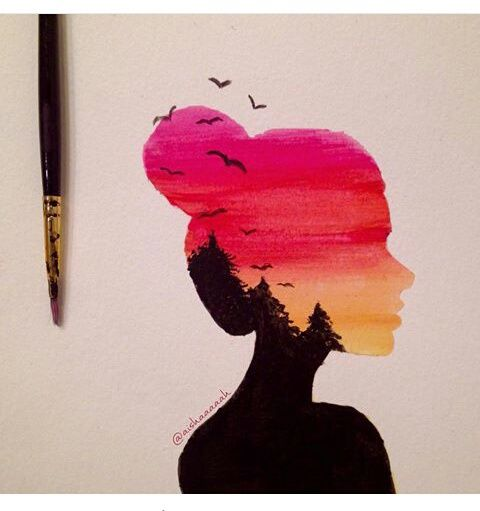

Concepto
Como arte denominamos un conjunto de disciplinas o producciones del ser humano de fines estéticos y simbólicos a partir de un conjunto determinado de criterios, reglas y técnicas.
Etimológicamente, la palabra arte procede del latín ars, artis, y del griego τέχνη (téchne), que significa "técnica". De ahí que fuera usada en la antigüedad para referirse también a oficios como la herrería, además de las disciplinas como la poesía, la pintura o la música.

|